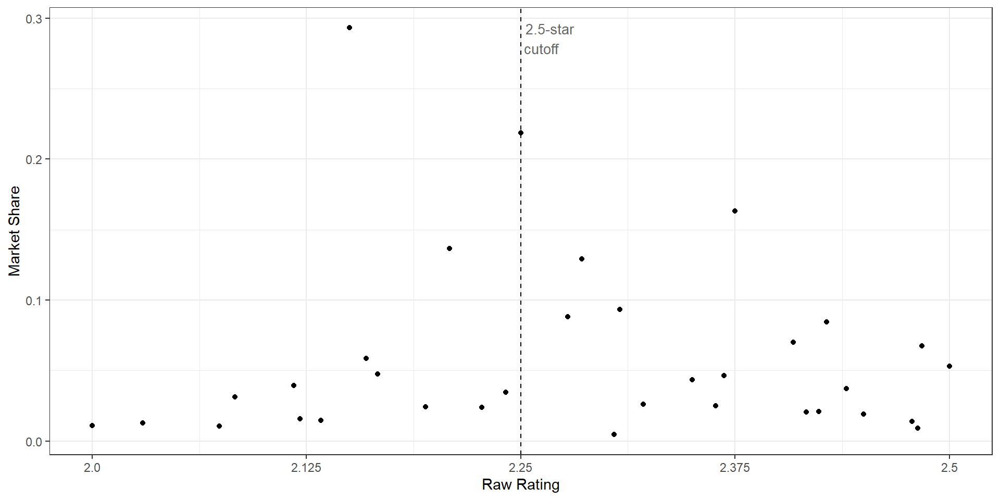
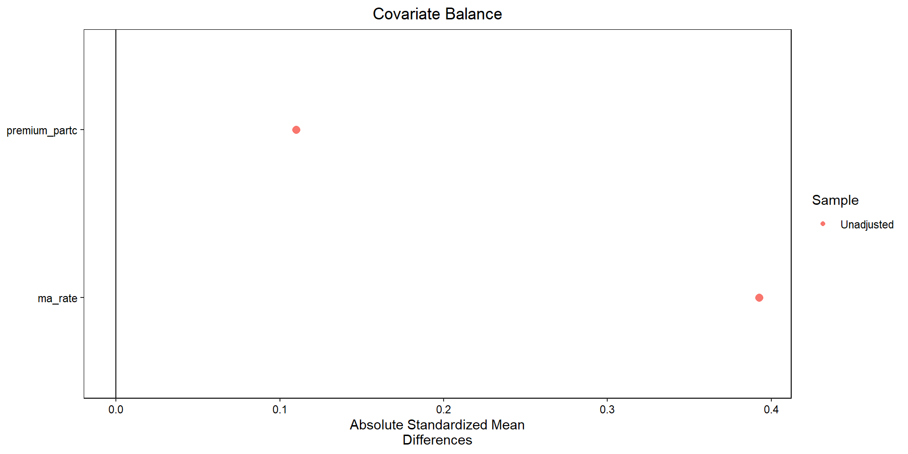
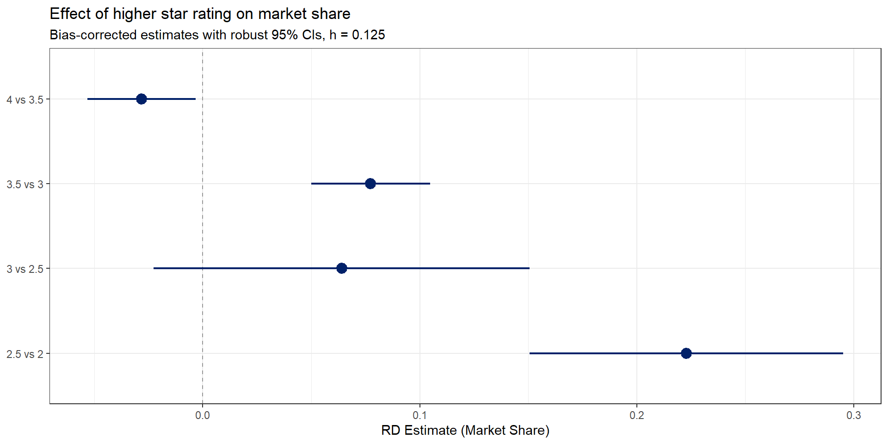

| (1) | |
|---|---|
| (Intercept) | 0.026 |
| (0.003) | |
| Star Rating = 2 | 0.025 |
| (0.003) | |
| Star Rating = 2.5 | 0.070 |
| (0.003) | |
| Star Rating = 3 | 0.043 |
| (0.003) | |
| Star Rating = 3.5 | 0.030 |
| (0.003) | |
| Star Rating = 4 | 0.030 |
| (0.004) | |
| Star Rating = 4.5 | 0.029 |
| (0.005) | |
| Num.Obs. | 22537 |
| R2 | 0.045 |
CMS does more than just an average…
We need contracts where the raw rating maps cleanly to the displayed star rating. CMS rounds raw scores to the nearest half-star, so a raw rating of 2.25 is the threshold between 2.0 and 2.5 stars.
# Candidates: partc_score 2 or 2.5 with non-missing raw_rating and partc_score
ma_25star_candidates <- ma_2009 %>%
filter(
!is.na(raw_rating),
!is.na(partc_score),
Star_Rating %in% c(2.0, 2.5)
)
n_candidates_total <- nrow(ma_25star_candidates)
n_candidates_by_score <- ma_25star_candidates %>% count(partc_score)
# Final sample: raw_rating in the range consistent with the star score
ma_25star <- ma_25star_candidates %>%
filter(
raw_rating >= 2,
raw_rating <= 2.5,
(raw_rating >= 2.25 & Star_Rating == 2.5) | (raw_rating < 2.25 & Star_Rating == 2)
)
n_25star_total <- nrow(ma_25star)
n_25star_by_score <- ma_25star %>% count(partc_score)# Candidates: partc_score 2 or 2.5 with non-missing raw_rating and partc_score
candidates_mask = (
ma_2009["raw_rating"].notna()
& ma_2009["Star_Rating"].notna()
& ma_2009["Star_Rating"].isin([2.0, 2.5])
)
ma_25star_candidates = ma_2009.loc[candidates_mask].copy()
n_candidates_total = len(ma_25star_candidates)
n_candidates_by_score = ma_25star_candidates["Star_Rating"].value_counts()
# Final sample: raw_rating in the range consistent with the star score
match_mask = (
ma_25star_candidates["raw_rating"].between(2, 2.5)
& (
((ma_25star_candidates["Star_Rating"] == 2.5) &
(ma_25star_candidates["raw_rating"] >= 2.25))
|
((ma_25star_candidates["Star_Rating"] == 2) &
(ma_25star_candidates["raw_rating"] <= 2.25))
)
)
ma_25star = ma_25star_candidates.loc[match_mask].copy()
n_25star_total = len(ma_25star)
n_25star_by_score = ma_25star["Star_Rating"].value_counts()
print("Obs with partc_score 2 or 2.5:", n_candidates_total)
print(n_candidates_by_score)
print("Obs with raw_rating in the matching range:", n_25star_total)
print(n_4star_by_score)Obs with partc_score 2 or 2.5: 12127 # A tibble: 2 × 2
partc_score n
<dbl> <int>
1 2 4545
2 2.5 7582Obs with raw_rating in the matching range: 6935 # A tibble: 2 × 2
partc_score n
<dbl> <int>
1 2 4303
2 2.5 2632rd.result <- rdplot(ma_25star$mkt_share, ma_25star$raw_rating,
c=2.25, p=2,
title="RD Plot with Binned Average",
x.label="Running Variable",
y.label="Outcome",
hide = TRUE)
bin.avg <- as_tibble(rd.result$vars_bins)
plot.bin <- bin.avg %>% ggplot(aes(x=rdplot_mean_x,y=rdplot_mean_y)) +
geom_point() + theme_bw() +
geom_vline(aes(xintercept=2.25),linetype='dashed') +
scale_x_continuous(
breaks = c(2, 2.125, 2.25, 2.375, 2.5),
label = c("2.0", "2.125", "2.25", "2.375", "2.5")
) +
xlab("Raw Rating") + ylab("Market Share") +
annotate("text", x=2.25, y=Inf, label="2.5-star\ncutoff",
vjust=1.5, hjust=-0.1, size=3.5, color="grey40")import pandas as pd
import matplotlib.pyplot as plt
from rdrobust import rdplot
# RD plot using mkt_share as outcome and raw_rating as running variable
rd_result = rdplot(
y=ma_25star["mkt_share"].values,
x=ma_25star["raw_rating"].values,
c=2.25,
title="RD Plot with Binned Average",
x_label="Running Variable",
y_label="Outcome",
hide=True # don't show the built-in plot
)
# vars_bins is already a pandas DataFrame in the Python implementation
bin_avg = rd_result.vars_bins
# Recreate the custom plot
fig, ax = plt.subplots()
ax.scatter(
bin_avg["rdplot_mean_x"],
bin_avg["rdplot_mean_y"]
)
ax.axvline(x=2.25, linestyle="--", color="grey")
ax.set_xticks([2.0, 2.125, 2.25, 2.375, 2.5])
ax.set_xticklabels(["2.0", "2.125", "2.25", "2.375", "2.5"])
ax.set_xlabel("Raw Rating")
ax.set_ylabel("Market Share")
ax.set_title("RD Plot with Binned Average")
ax.annotate("2.5-star\ncutoff", xy=(2.25, ax.get_ylim()[1]),
xytext=(2.27, ax.get_ylim()[1]*0.95), fontsize=9, color="grey")
plt.tight_layout()
plt.show()
ma.rd1 <- ma_25star %>%
mutate(score = raw_rating - 2.25,
treat = (score>=0),
window1 = (score>=-.175 & score<=.175),
window2 = (score>=-.125 & score<=.125),
score_treat=score*treat)
star25.1 <- lm(mkt_share ~ score + treat, data=ma.rd1)
star25.2 <- lm(mkt_share ~ score + treat, data= (ma.rd1 %>% filter(window1==TRUE)))
star25.3 <- lm(mkt_share ~ score + treat + score_treat, data= (ma.rd1 %>% filter(window1==TRUE)))
star25.4 <- lm(mkt_share ~ score + treat + score_treat, data= (ma.rd1 %>% filter(window2==TRUE)))
est1 <- as.numeric(star25.1$coef[3])
est2 <- as.numeric(star25.2$coef[3])
est3 <- as.numeric(star25.3$coef[3])
est4 <- as.numeric(star25.4$coef[3])
rows <- tribble(~term, ~ m1, ~ m2, ~ m3 , ~ m4,
'Bandwidth', "0.25", "0.175", "0.175", "0.125")
attr(rows, 'position') <- 7import pandas as pd
import statsmodels.formula.api as smf
# Start from ga_ma_4star DataFrame
ma_rd1 = ma_25star.copy()
ma_rd1["score"] = ma_rd1["raw_rating"] - 2.25
ma_rd1["treat"] = (ma_rd1["score"] >= 0).astype(int)
ma_rd1["window1"] = (ma_rd1["score"].between(-0.175, 0.175))
ma_rd1["window2"] = (ma_rd1["score"].between(-0.125, 0.125))
ma_rd1["score_treat"] = ma_rd1["score"] * ma_rd1["treat"]
# Regressions
star25_1 = smf.ols("mkt_share ~ score + treat", data=ma_rd1).fit()
star25_2 = smf.ols("mkt_share ~ score + treat",
data=ma_rd1[ma_rd1["window1"]]).fit()
star25_3 = smf.ols("mkt_share ~ score + treat + score_treat",
data=ma_rd1[ma_rd1["window1"]]).fit()
star25_4 = smf.ols("mkt_share ~ score + treat + score_treat",
data=ma_rd1[ma_rd1["window2"]]).fit()
# Extract treatment effect (coefficient on treat)
est1 = float(star25_1.params["treat"])
est2 = float(star25_2.params["treat"])
est3 = float(star25_3.params["treat"])
est4 = float(star25_4.params["treat"])
# Bandwidth row (analogous to tribble + attribute)
rows = pd.DataFrame(
{
"term": ["Bandwidth"],
"m1": ["0.25"],
"m2": ["0.175"],
"m3": ["0.175"],
"m4": ["0.125"],
}
)
rows.attrs["position"] = 7| (1) | (2) | (3) | (4) | |
|---|---|---|---|---|
| Raw Score | 0.010 | -0.277 | -0.141 | -0.204 |
| (0.021) | (0.038) | (0.050) | (0.054) | |
| Treatment | 0.012 | 0.058 | 0.066 | 0.070 |
| (0.006) | (0.008) | (0.008) | (0.010) | |
| Score x Treat | -0.328 | -0.255 | ||
| (0.078) | (0.117) | |||
| Bandwidth | 0.25 | 0.175 | 0.175 | 0.125 |
| Num.Obs. | 6935 | 4605 | 4605 | 4422 |
| R2 | 0.009 | 0.012 | 0.016 | 0.013 |
from rdrobust import rdrobust
# Fixed bandwidth
est1 = rdrobust(
y=ma_rd1["mkt_share"].values,
x=ma_rd1["score"].values,
c=0,
h=0.125,
p=1,
kernel="uniform",
vce="hc0",
masspoints="off",
)
# Optimal bandwidth (letting rdrobust choose h)
estopt = rdrobust(
y=ma_rd1["mkt_share"].values,
x=ma_rd1["score"].values,
c=0,
p=1,
kernel="uniform",
vce="hc0",
masspoints="off",
)| Spec | Estimate | Robust CI | BW | N |
|---|---|---|---|---|
| Fixed (h=0.125) | 0.0701 | [0.1506, 0.2952] | 0.125 | 6935 |
| Optimal | 0.1809 | [0.0957, 0.3062] | 0.033 | 6935 |
from rdrobust import rddensity, rdplotdensity
import matplotlib.pyplot as plt
# Run McCrary-style density test at cutoff 0
dens1 = rddensity(x=ma_rd1["score"].values, c=0)
# Create the density plot object (rdplotdensity returns a matplotlib figure/axes)
densplot = rdplotdensity(dens1, x=ma_rd1["score"].values)
# If you want to explicitly show or tweak:
fig = densplot["fig"]
ax = densplot["ax"]
ax.set_title("Density test around cutoff")
ax.set_xlabel("Score")
ax.set_ylabel("Estimated density")
plt.show()| Value | |
|---|---|
| T-statistic | 55.91 |
| P-value | 0.00 |
Interpretation: A large p-value means we cannot reject equal density on both sides of the cutoff, which is what we want. No evidence of manipulation.
import numpy as np
import pandas as pd
from sklearn.neighbors import NearestNeighbors
import matplotlib.pyplot as plt
# 1. Subset data as in your R code
sub = (
ma_rd1
.loc[
(ma_rd1["window2"]) &
ma_rd1["treat"].notna() &
ma_rd1["premium_partc"].notna() &
ma_rd1["ma_rate"].notna()
]
.copy()
)
covariates = ["premium_partc", "ma_rate"]
X = sub[covariates].to_numpy()
t = sub["treat"].astype(int).to_numpy()
# 2. Mahalanobis nearest-neighbor matching (1:1)
# Estimate covariance matrix of covariates and its inverse
V = np.cov(X, rowvar=False)
V_inv = np.linalg.inv(V)
# Fit NN on controls only
nn = NearestNeighbors(
n_neighbors=1,
metric="mahalanobis",
metric_params={"V": V}
)
nn.fit(X[t == 0])
# For each treated unit, find nearest control
dist, idx = nn.kneighbors(X[t == 1])
control_matches = sub.loc[t == 0].iloc[idx[:, 0]].copy()
treated_matched = sub.loc[t == 1].copy()
# Build matched sample
matched = pd.concat(
[
treated_matched.reset_index(drop=True),
control_matches.reset_index(drop=True)
],
axis=0
).reset_index(drop=True)
matched["treat"] = np.r_[np.ones(len(treated_matched)), np.zeros(len(control_matches))]
# 3. Function for standardized mean differences (SMD)
def smd(df, var, treat_col="treat"):
g1 = df[df[treat_col] == 1][var]
g0 = df[df[treat_col] == 0][var]
m1, m0 = g1.mean(), g0.mean()
s = np.sqrt(0.5 * (g1.var(ddof=1) + g0.var(ddof=1)))
return (m1 - m0) / s
# SMDs before and after matching
smd_before = [smd(sub, v) for v in covariates]
smd_after = [smd(matched, v) for v in covariates]
# 4. “Love plot” (absolute SMDs)
fig, ax = plt.subplots()
y_pos = np.arange(len(covariates))
ax.scatter(np.abs(smd_before), y_pos, marker="o", label="Unmatched")
ax.scatter(np.abs(smd_after), y_pos, marker="s", label="Matched")
ax.set_yticks(y_pos)
ax.set_yticklabels(covariates)
ax.set_xlabel("Absolute standardized mean difference")
ax.axvline(0.1, linestyle="--") # common reference line
ax.legend()
ax.invert_yaxis() # to mimic cobalt’s ordering
plt.tight_layout()
plt.show()
ma.rd225 <- ma_2009 %>%
filter(Star_Rating==2 | Star_Rating==2.5) %>%
mutate(score = raw_rating - 2.25,
treat = (score>=0),
window1 = (score>=-.175 & score<=.175),
window2 = (score>=-.125 & score<=.125),
score_treat=score*treat)
est225 <- rdrobust(y=ma.rd225$mkt_share, x=ma.rd225$score, c=0,
h=0.125, p=1, kernel="uniform", vce="hc0",
masspoints="off")import pandas as pd
from py_rdpackages import rdrobust # wrapper around rdrobust in R
# starting from ma_2009 as a pandas DataFrame
ma_rd225 = (
ma_2009
.loc[ma_2009["Star_Rating"].isin([2, 2.5])]
.assign(
score=lambda d: d["raw_rating"] - 2.25,
treat=lambda d: (d["score"] >= 0).astype(int),
window1=lambda d: d["score"].between(-0.175, 0.175),
window2=lambda d: d["score"].between(-0.125, 0.125),
score_treat=lambda d: d["score"] * d["treat"],
)
)
est225 = rdrobust(
y=ma_rd225["mkt_share"].to_numpy(),
x=ma_rd225["score"].to_numpy(),
c=0,
h=0.125,
p=1,
kernel="uniform", # if this errors, try kernel="uni"
vce="hc0",
masspoints="off"
)| Spec | Estimate | Robust CI | BW | N |
|---|---|---|---|---|
| 2.5 vs 2.0 (h=0.125) | 0.0701 | [0.1506, 0.2952] | 0.125 | 12127 |
Same approach, applied to every half-star cutoff. The code below loops over each threshold and collects the rdrobust estimates into a single data frame.
cutoffs <- tibble(
lower = c(2, 2.5, 3, 3.5),
upper = c(2.5, 3, 3.5, 4),
cutoff = c(2.25, 2.75, 3.25, 3.75)
)
rd_results <- cutoffs %>%
pmap_dfr(function(lower, upper, cutoff) {
dat <- ma_2009 %>%
filter(Star_Rating == lower | Star_Rating == upper) %>%
mutate(score = raw_rating - cutoff)
est <- rdrobust(y=dat$mkt_share, x=dat$score, c=0,
h=0.125, p=1, kernel="uniform", vce="hc0",
masspoints="off")
tibble(
threshold = paste0(upper, " vs ", lower),
estimate = est$coef[2],
ci_lower = est$ci[3,1],
ci_upper = est$ci[3,2],
n = est$N[1] + est$N[2]
)
})from rdrobust import rdrobust
import pandas as pd
cutoffs = [
(2, 2.5, 2.25),
(2.5, 3, 2.75),
(3, 3.5, 3.25),
(3.5, 4, 3.75),
]
results = []
for lower, upper, cutoff in cutoffs:
dat = ma_2009[ma_2009["Star_Rating"].isin([lower, upper])].copy()
dat["score"] = dat["raw_rating"] - cutoff
est = rdrobust(
y=dat["mkt_share"].values,
x=dat["score"].values,
c=0, h=0.125, p=1,
kernel="uniform", vce="hc0",
masspoints="off"
)
results.append({
"threshold": f"{upper} vs {lower}",
"estimate": est.coef.iloc[1, 0], # bias-corrected
"ci_lower": est.ci.iloc[2, 0], # robust CI
"ci_upper": est.ci.iloc[2, 1],
})
rd_results = pd.DataFrame(results)
Star ratings are discrete (only a few unique values of the running variable). Standard RD asymptotics assume a continuous running variable, so we need adjustments.
rdrobust has a masspoints option to handle this.See Cattaneo, Idrobo, and Titiunik (2020), Chapter 4 for details.